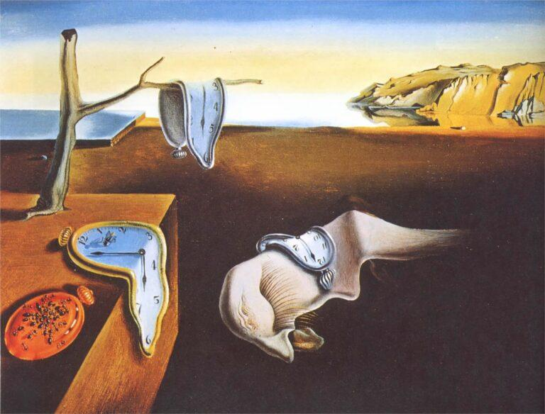

M

persistance de la mémoire - Salvador Dalí - 1931
La Persistance de la Mémoire est un tableau peint par Salvador Dalí en 1931 souvent appelé montres molles. C’est une huile sur toile surréaliste mesurant 24x33 cm qui est exposé a New York au Museum of Modern Art

Les renards fondants
- Taille: 24x33 cm
- Année: 1931
- Lieu de conservation: Museum of Modern Art
- Technique: Huile sur toile
- Type: paysage, nature morte
- Mouvement: surréaliste